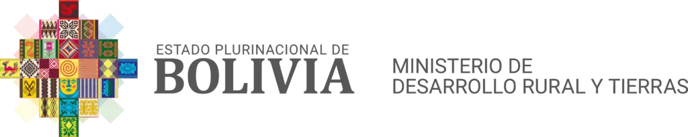

<nav class="navbar navbar-expand-lg custom-navbar" [ngClass]="{'dark-theme': isDarkMode}">
  <div class="container-fluid">
    <!-- Sección de Logos -->
    <div class="logo-container">
      
      
      
    </div>

    <!-- Botón de Sidebar (Solo visible para Administradores) -->
    <button 
      class="btn btn-outline-secondary me-2 sidebar-btn" 
      (click)="toggleSidebar()" 
      *ngIf="userRole === 'Administrador'">
      <i class="bi bi-list"></i>
    </button>

    <!-- Botón Toggler para Responsive -->
    <button class="navbar-toggler" type="button" data-bs-toggle="collapse" 
            data-bs-target="#navbarSupportedContent" aria-controls="navbarSupportedContent" 
            aria-expanded="false" aria-label="Toggle navigation">
      <span class="navbar-toggler-icon"></span>
    </button>

    <div class="collapse navbar-collapse justify-content-end" id="navbarSupportedContent">
      <ul class="navbar-nav me-auto mb-2 mb-lg-0"></ul>

      <!-- Botones de acciones (Modo oscuro, perfil, logout) -->
      <div class="d-flex align-items-center">
        <button type="button" class="btn btn-outline-secondary me-2" (click)="toggleTheme($event)">
          <i class="bi" [ngClass]="isDarkMode ? 'bi-sun' : 'bi-moon'"></i>
        </button>
        
        <!-- Botón de perfil (Solo visible para Administradores) -->
        <button type="button" class="btn btn-outline-secondary me-2" *ngIf="userRole === 'Administrador'">
          <i class="bi bi-person"></i>
        </button>

        <!-- Botón de Logout (Siempre visible) -->
        <button type="button" class="btn btn-outline-danger" (click)="logout()">
          <i class="bi bi-box-arrow-right"></i> Cerrar sesión
        </button>      
      </div>
    </div>
  </div>
</nav>
